The Left : The left side of the Canvas : Engine Mode, Save, Load, Sprite Tab, Mesh Tab, Color Tab
The Center : The Canvas, the utility buttons on top the Canvas, the Log window bellow the Canvas
The Right : The right side of the Canvas : Layer, Mesh, Object, Scene, Draw Checkbuttons, etc.
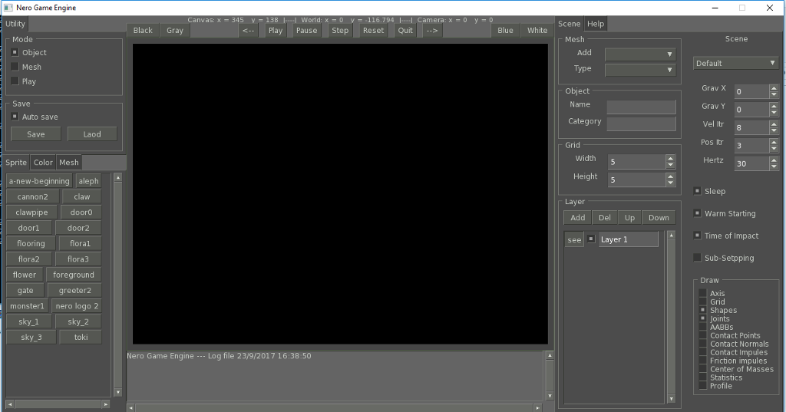
Collisions: four methods: begin, end, presolve and postsolve. Begin and end are called when there is the first contact and when the contact ends. The other are called arternatively and repeatedly while the objects are overlapping.
Actions: ActionObject, register actions in objects: my_player.registerAction<JumpAction>("jump") ---> if(key j is pressed) m_player.callAction("jump").
Objects in the hierarchy: find, move, remove.
Collisions: cancollide("obj1", "ojb2")
Configuration Files
In order to make the Engine more flexible, many hard coded properties are now made evailable as configurations. Configuration files are JSON files, they are all located in the folder "/config"
As a example, for each resource type (Texture, Sound, Music etc), you can now choose the folder where to put them, you can also choose the extensions you want to handle.
For Fonts, you can choose what Font to use as default.
{
"font" :
{
"folder" : "Resource/Font",
"extension" : ["ttf"],
"default" : "Sansation"
},
"sound" :
{
"folder" : "Resource/Sound",
"extension" : ["wav", "ogg", "flac"]
},
"music" :
{
"folder" : "Resource/music",
"extension" : ["wav", "ogg", "flac"]
},
"texture" :
{
"folder" : "Resource/Texture",
"extension" : ["png", "jpg", "bmp", "dds", "tga", "psd"],
"separator" : "-"
},
"shader" :
{
"folder" : "Resource/Shader",
"shader-list" : "Resource/Shader/shader.json",
"extension" : ["vert", "frag"]
},
"animation" :
{
"folder" : "Resource/Animation",
"extension" : ["png", "jpg"]
},
"script" :
{
"folder" : "Resource/Script",
"extension" : ["lua"]
}
}
"font" :
{
"folder" : "Resource/Font",
"extension" : ["ttf"],
"default" : "Sansation"
},
"sound" :
{
"folder" : "Resource/Sound",
"extension" : ["wav", "ogg", "flac"]
},
"music" :
{
"folder" : "Resource/music",
"extension" : ["wav", "ogg", "flac"]
},
"texture" :
{
"folder" : "Resource/Texture",
"extension" : ["png", "jpg", "bmp", "dds", "tga", "psd"],
"separator" : "-"
},
"shader" :
{
"folder" : "Resource/Shader",
"shader-list" : "Resource/Shader/shader.json",
"extension" : ["vert", "frag"]
},
"animation" :
{
"folder" : "Resource/Animation",
"extension" : ["png", "jpg"]
},
"script" :
{
"folder" : "Resource/Script",
"extension" : ["lua"]
}
}
Load
Animation
When you obtain the two files generated by Texture Packer, you simply have to copy and paste them in the "/Resource/Animation" directory. The rest is automatic, the Engine read your files and build the Animations.
In the picture bellow, you can see that each animation is made of one PNG file and one JSON file. Both files must have the same name.
 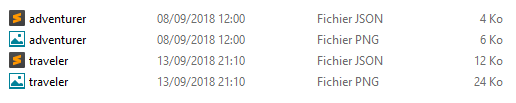
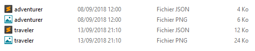
Animation Object
On the left of the Engine Interface, There is now an Animation Tab. All loaded animations can be founded there. Animations work like Sprites. If you put the mouse over an Animation_Button you can see a Preview.
If you click on a Animation_Button you add a Animation_Object onto the Canvas.
Animations are like any other Object, you can move them arround, Rotate them, Scale them, Duplication them etc.
Like Sprite, you can change the Color of your Animation, simply select the Animation Object and process like if it was a Sprite Object.
A Layer of Animations appears with a Yellow color, this is temporary I will review all the Colors for Layer's types
Animations and Physics
Again the process is the same as for Sprite_Object. Hold CRTL and Click on a Animation_Button to add a Animation_Meshed_Object onto the Canvas. When a Animation_Meshed_Object is selected you can go to the Mesh Tab and change the properties of its Mesh Object. When you build your Scene by clicking on the "Return key" or the "Play Button" the Animation_Meshed_Object becomes a Animation_Solid_Object.
A Layer of Animation_Meshed_Object appears with a Light Blue color, this is a temporary color;
Animation Sequences
An Animation is made of Sequences. Each animation has at least one sequence. If the Animation concerns a character we usally have something like ("idle", "walk", "run", "jump"). If the Animation concerns a simple background object like flowers or animals you simply have one sequence.
When you add an Animation Object onto the canvas, the Animation has it's default sequence selected. In order to do that, the Engine need to know the name of the default sequence. For a character the default sequence is the "idle" sequence. But for a none character animation is it called "idle" ? I had three choices : "idle", "default", "The name of the animation". I took the last one.
If you have an Animation called "player" and the following seqences ("idle", "walk", "run", "jump"), the Engine will expect you to name your sequences as followed
("player", "walk", "run", "jump").
If you have a Animation called "flower" whith one sequence, the engine will expect that sequence to be called "flower".
The Sequence Tab
Alongside with the Sprite, Animation and other Tabs, you now have the Sequence Tab. By default this Tab is empty, but when you select an Animation Object, the Sequence Tab shows all the Sequences available for the selected Animation Object.
From this tab you can configure the frame rate of each sequence. the value is in hertz (inverse of second). If you choose of frame rate of "10", it means "1/10 second";

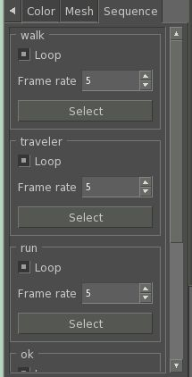
Animation is not Just Animation
You can see a nero::AnimationObject like a nero::SpriteObject that have the power to change is internal Sprite whenever it want. Imagine you have a breakable object in your game. That object will have several state ("healthy", "half break", "break"). This is not a animation, but it can be represented whith a Animation Object.
In order to say to a Animation to stop being a animation, you simply have to tell him to never update itself
After that you have the power to controle the animation manually.
that's all for Animation, I will make a post later today in order to present other new features.
When you obtain the two files generated by Texture Packer, you simply have to copy and paste them in the "/Resource/Animation" directory. The rest is automatic, the Engine read your files and build the Animations.
In the picture bellow, you can see that each animation is made of one PNG file and one JSON file. Both files must have the same name.
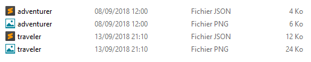Animation Object
On the left of the Engine Interface, There is now an Animation Tab. All loaded animations can be founded there. Animations work like Sprites. If you put the mouse over an Animation_Button you can see a Preview.
If you click on a Animation_Button you add a Animation_Object onto the Canvas.
Animations are like any other Object, you can move them arround, Rotate them, Scale them, Duplication them etc.
Like Sprite, you can change the Color of your Animation, simply select the Animation Object and process like if it was a Sprite Object.
A Layer of Animations appears with a Yellow color, this is temporary I will review all the Colors for Layer's types
Animations and Physics
Again the process is the same as for Sprite_Object. Hold CRTL and Click on a Animation_Button to add a Animation_Meshed_Object onto the Canvas. When a Animation_Meshed_Object is selected you can go to the Mesh Tab and change the properties of its Mesh Object. When you build your Scene by clicking on the "Return key" or the "Play Button" the Animation_Meshed_Object becomes a Animation_Solid_Object.
A Layer of Animation_Meshed_Object appears with a Light Blue color, this is a temporary color;
Animation Sequences
An Animation is made of Sequences. Each animation has at least one sequence. If the Animation concerns a character we usally have something like ("idle", "walk", "run", "jump"). If the Animation concerns a simple background object like flowers or animals you simply have one sequence.
When you add an Animation Object onto the canvas, the Animation has it's default sequence selected. In order to do that, the Engine need to know the name of the default sequence. For a character the default sequence is the "idle" sequence. But for a none character animation is it called "idle" ? I had three choices : "idle", "default", "The name of the animation". I took the last one.
If you have an Animation called "player" and the following seqences ("idle", "walk", "run", "jump"), the Engine will expect you to name your sequences as followed
("player", "walk", "run", "jump").
If you have a Animation called "flower" whith one sequence, the engine will expect that sequence to be called "flower".
The Sequence Tab
Alongside with the Sprite, Animation and other Tabs, you now have the Sequence Tab. By default this Tab is empty, but when you select an Animation Object, the Sequence Tab shows all the Sequences available for the selected Animation Object.
From this tab you can configure the frame rate of each sequence. the value is in hertz (inverse of second). If you choose of frame rate of "10", it means "1/10 second";
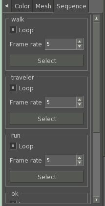
Animation is not Just Animation
You can see a nero::AnimationObject like a nero::SpriteObject that have the power to change is internal Sprite whenever it want. Imagine you have a breakable object in your game. That object will have several state ("healthy", "half break", "break"). This is not a animation, but it can be represented whith a Animation Object.
In order to say to a Animation to stop being a animation, you simply have to tell him to never update itself
animation_object->setUpdateable(false);
After that you have the power to controle the animation manually.
animation_object->setFrame(0) // by default the object
is healthy
animation_object->setFrame(1) //the object has been half broken, let go to the second frame
animation_object->setFrame(2) //the object has been complety broken let go to the last frame
animation_object->setFrame(1) //the object has been half broken, let go to the second frame
animation_object->setFrame(2) //the object has been complety broken let go to the last frame
that's all for Animation, I will make a post later today in order to present other new features.
Hi again ! Now
the Engine have Animations (see the post above), but that's not all. In
this post I will show all the new features I've been working on
Merge Layer
It is now possible to merge two layers. The only condition is that, they have to be of the same type (the same color).
On the Right of the Engine there are two new buttons: "Merge UP" and "Merge Down".
When you merge up by example, the content of the currently selected layer is taken and added to the layer above.
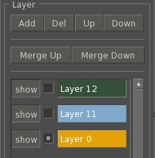

The Axis icon
On the bottom left of the Canvas there is now a Icon that shows the direction of the X and Y axis. I saw this in Blender so I thought it would be cool to have one in the Engine . The Icon rotate when the Camera rotate. You can hide it if you want, just uncheck the "Axis" check box on the Right of the Engine Interface.
 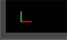
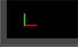
Scale preview with Mouse Wheel
When the mouse is over a Sprite_Button or a Animation_Button, you can now scale the preview with the Mouse Wheel. Previously the Divide_Key and Multiply_Key were used, but using the Mouse Wheel is more fun .
Mesh Edition, Axe aligned movement
Mesh edition can be tough sometimes. In certain cases you want to move a vertex, only vertically or only horizontally but your mouse just doesn't want to let you do that. Now you don't have to be an expert at moving the mouse to do what you want. I made a little change in the algorithm. When moving a vertex, a line or an entire mesh, if your movement is more vertical than horizontal the Engine will assume that your movement is only vertical.
Example : we have a vertex at (1, 1). we apply a movement of (2, 4). the result should be (1+2, 1+4) = (2, 5).
but now the engine say, abs(4) > abs(2) so lets apply a movement of (0, 4) instead, the movement is nullify on the x Axis.
The Canvas Grid
This feature is still in development. By default the Grid is Hidden, you can make it visible by checking the "Grid" check box on the Right of the Engine.
What I am trying to do here is a "Infinite" Grid. When the Grid is Axe aligned there is no problem to simulate an "Infinite" Grid, you can move the Camera vertically or horizontally as you want, the Grid will adapt itself. But When the Grid is rotated, it becomes difficult to simulate "Infinity".
Lua Script
The integration of Lua in the Engine is beginning slowly. Each nero::Scene now have a instance of a "Lua State" called "L". All the Lua standard libraries are loaded by default. If you have some experience with Lua and C++ you can already begin to call your scripts in your nero::Scene Class.
Github updated
The Github repository have been updated. we are now at the version 0.8.0 . The code is not stable, I will have to review the code to make sure every is right. When it's done I will publish a new version of the SDK with all the new features. If you like the project don't forget to give a start to the project on Github
Merge Layer
It is now possible to merge two layers. The only condition is that, they have to be of the same type (the same color).
On the Right of the Engine there are two new buttons: "Merge UP" and "Merge Down".
When you merge up by example, the content of the currently selected layer is taken and added to the layer above.
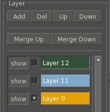
The Axis icon
On the bottom left of the Canvas there is now a Icon that shows the direction of the X and Y axis. I saw this in Blender so I thought it would be cool to have one in the Engine . The Icon rotate when the Camera rotate. You can hide it if you want, just uncheck the "Axis" check box on the Right of the Engine Interface.
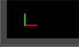Scale preview with Mouse Wheel
When the mouse is over a Sprite_Button or a Animation_Button, you can now scale the preview with the Mouse Wheel. Previously the Divide_Key and Multiply_Key were used, but using the Mouse Wheel is more fun .
Mesh Edition, Axe aligned movement
Mesh edition can be tough sometimes. In certain cases you want to move a vertex, only vertically or only horizontally but your mouse just doesn't want to let you do that. Now you don't have to be an expert at moving the mouse to do what you want. I made a little change in the algorithm. When moving a vertex, a line or an entire mesh, if your movement is more vertical than horizontal the Engine will assume that your movement is only vertical.
Example : we have a vertex at (1, 1). we apply a movement of (2, 4). the result should be (1+2, 1+4) = (2, 5).
but now the engine say, abs(4) > abs(2) so lets apply a movement of (0, 4) instead, the movement is nullify on the x Axis.
The Canvas Grid
This feature is still in development. By default the Grid is Hidden, you can make it visible by checking the "Grid" check box on the Right of the Engine.
What I am trying to do here is a "Infinite" Grid. When the Grid is Axe aligned there is no problem to simulate an "Infinite" Grid, you can move the Camera vertically or horizontally as you want, the Grid will adapt itself. But When the Grid is rotated, it becomes difficult to simulate "Infinity".
Lua Script
The integration of Lua in the Engine is beginning slowly. Each nero::Scene now have a instance of a "Lua State" called "L". All the Lua standard libraries are loaded by default. If you have some experience with Lua and C++ you can already begin to call your scripts in your nero::Scene Class.
Github updated
The Github repository have been updated. we are now at the version 0.8.0 . The code is not stable, I will have to review the code to make sure every is right. When it's done I will publish a new version of the SDK with all the new features. If you like the project don't forget to give a start to the project on Github
The
Nero Adventure Scene
Hi everyone, how do you do.
In order to complet the Engine and reach the first version, I needed to work on a concrete Game Scene. So I took the code of my game prototype and begin to update it. I gave up on the name "Kero", it's now call the "Nero Adventure Scene". The artwork I'am using is from the Open Pixel Project and the Kenney Asset Store.
The Scene will be composed of 5 parts:
1- A Startup Screen (display when the Render Engine start)
2- A Game Menu Screen
3- A Game Scene (the actual game)
4- A Pause Screen
5- A Credit Screen (display when you finish the game)
The idea is to cover most of the Engine features. The code develop in this game will be added in the "Nero Game Lib" library.
Here is a first look of the main character
Hi everyone, how do you do.
In order to complet the Engine and reach the first version, I needed to work on a concrete Game Scene. So I took the code of my game prototype and begin to update it. I gave up on the name "Kero", it's now call the "Nero Adventure Scene". The artwork I'am using is from the Open Pixel Project and the Kenney Asset Store.
The Scene will be composed of 5 parts:
1- A Startup Screen (display when the Render Engine start)
2- A Game Menu Screen
3- A Game Scene (the actual game)
4- A Pause Screen
5- A Credit Screen (display when you finish the game)
The idea is to cover most of the Engine features. The code develop in this game will be added in the "Nero Game Lib" library.
Here is a first look of the main character
Hi everyone !.
Hope your are doing great.
I made a lot of progress on the Engine development, I had not enough time to write a post, so there will be a lot to say.
Text Object
New object types have been added in the Engine. Let's begin by the Text Object.
On the left of the Engine Interface, along with the Sprite Tab, there is a new Tab named Text. From this Tab you can create some Text Objects and edit their properties.
Like other object types, a Text_Object can be moved, rotated, scaled, duplicated etc.
When a Text Object is selected you can change its font, its font size (character size), its outline thickness and its style (bold, italic, underline, linethrough).
From the Color_Tab you can change the text color but also the text outline color.
I'm currently using SFML 2.4.1, in the latest versions of SFML, there are two other text properties : Latter Spacing and Line Spacing. I will add those properties when I update SFML.
Write a New Line.
In order to return to the line when writting the text of your Text Object, you must insert a special character. By default it is the pipe ( | ) character. You can choose the character you want my modifying the configuration file config/engine_config.json. The property is named carriage_return
It's more easy to explain with a video. So here is one.
Re-order Object
There are now two buttons allowing to move a Object Up or Down in the current Layer.
 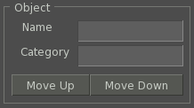
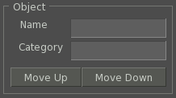
Default file/directory generation
In a previous post, I said the Engine need some directories and files to be available in order to work properly. For example we have the resource directory and all its sub directories, the log configuration file, the Sansation font, and some new config files I added recently.
From now on the Engine will generate those files and directories automatically on startup if they do not exist.
There are many configuration files in the config directory, If you made some changes on them and want to revert the changes, just delete them, the engine will bring them back.
The Log View
Bellow the Engine Canvas you got the Log View. It is now possible to log in this area from a nero::Scene. Each nero::Scene now provide a function void log(std::string message) that print its message in the Log view. This function internally call the nero_log(message) function, so the message will be also print in the console.
If you create a new class and want to log from this class to the Log View it's pretty easy. The log function is store in a std::function<void(string)>, you can retrieve it with the nero::Scene function getLog() and give it to your class;
FrameRate and FrameTime
From a nero::Scene it is now possible to retrieve the FrameRate and FrameTime with float getFrameRate() and float getFrameTime().

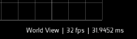
All nero::Scene Attributes Private
All the attributes in a nero::Scene are now private. Attributes will be accessed by some getters and setters.
It's no longer possible to write :
The objective is to secure the nero::Scene class. If a variable can be modified there will a setter, if a variable can be accessed there will be getter. This offer a more clean interface.
Last active Scene.
If you are working on several Scenes at the same time, you may switch between Scenes many time. From now on, if you close the Engine and restart it, the Engine will remember the last Scene you were working on, and will select it on Startup.
If the Engine is close properly via the Window close button or the Quit button above the Canvas, the Engine will save all your scenes befor to shutdown.
That's all for this post. There are more changes in the Engine, but those will be for another post. Have a good day !
I made a lot of progress on the Engine development, I had not enough time to write a post, so there will be a lot to say.
Text Object
New object types have been added in the Engine. Let's begin by the Text Object.
On the left of the Engine Interface, along with the Sprite Tab, there is a new Tab named Text. From this Tab you can create some Text Objects and edit their properties.
Like other object types, a Text_Object can be moved, rotated, scaled, duplicated etc.
When a Text Object is selected you can change its font, its font size (character size), its outline thickness and its style (bold, italic, underline, linethrough).
From the Color_Tab you can change the text color but also the text outline color.
I'm currently using SFML 2.4.1, in the latest versions of SFML, there are two other text properties : Latter Spacing and Line Spacing. I will add those properties when I update SFML.
Write a New Line.
In order to return to the line when writting the text of your Text Object, you must insert a special character. By default it is the pipe ( | ) character. You can choose the character you want my modifying the configuration file config/engine_config.json. The property is named carriage_return
It's more easy to explain with a video. So here is one.
Re-order Object
There are now two buttons allowing to move a Object Up or Down in the current Layer.
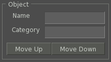Default file/directory generation
In a previous post, I said the Engine need some directories and files to be available in order to work properly. For example we have the resource directory and all its sub directories, the log configuration file, the Sansation font, and some new config files I added recently.
From now on the Engine will generate those files and directories automatically on startup if they do not exist.
There are many configuration files in the config directory, If you made some changes on them and want to revert the changes, just delete them, the engine will bring them back.
The Log View
Bellow the Engine Canvas you got the Log View. It is now possible to log in this area from a nero::Scene. Each nero::Scene now provide a function void log(std::string message) that print its message in the Log view. This function internally call the nero_log(message) function, so the message will be also print in the console.
If you create a new class and want to log from this class to the Log View it's pretty easy. The log function is store in a std::function<void(string)>, you can retrieve it with the nero::Scene function getLog() and give it to your class;
myNewClass.setLog( getLog() );
FrameRate and FrameTime
From a nero::Scene it is now possible to retrieve the FrameRate and FrameTime with float getFrameRate() and float getFrameTime().
- The frame rate is the number frame in one second.
- The frame time is the duration of one frame in seconds.
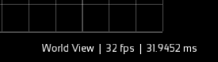
All nero::Scene Attributes Private
All the attributes in a nero::Scene are now private. Attributes will be accessed by some getters and setters.
It's no longer possible to write :
m_ObjectManager->findObject(name)
Now you will have to write : getObjectManager()->findObject(name)
The objective is to secure the nero::Scene class. If a variable can be modified there will a setter, if a variable can be accessed there will be getter. This offer a more clean interface.
Last active Scene.
If you are working on several Scenes at the same time, you may switch between Scenes many time. From now on, if you close the Engine and restart it, the Engine will remember the last Scene you were working on, and will select it on Startup.
If the Engine is close properly via the Window close button or the Quit button above the Canvas, the Engine will save all your scenes befor to shutdown.
That's all for this post. There are more changes in the Engine, but those will be for another post. Have a good day !
Fix Game loop
When playing with my Adventure Scene I notices that the game speed was not stable. Sometime the game accelerate, some time it slow down. The default loop speed is 60 FPS. This is a fixed time, so it surprised me to have that issue. But after inspecting the Engine game loop I saw that the rendering was done in the while loop.
while(timeSinceLastUpdate
>
TIME_PER_FRAME)
{
//retrieve 1/60 second in the accumulated time
timeSinceLastUpdate -= TIME_PER_FRAME;
//1... handle user inputs
handleEvent();
//2... update the game
update(TIME_PER_FRAME);
//3... render the game
render();
}
{
//retrieve 1/60 second in the accumulated time
timeSinceLastUpdate -= TIME_PER_FRAME;
//1... handle user inputs
handleEvent();
//2... update the game
update(TIME_PER_FRAME);
//3... render the game
render();
}
I put the rendering out of the game loop, now thing work smoothly.
while(timeSinceLastUpdate
>
TIME_PER_FRAME)
{
//retrieve 1/60 second in the accumulated time
timeSinceLastUpdate -= TIME_PER_FRAME;
//1... handle user inputs
handleEvent();
//2... update the game
update(TIME_PER_FRAME);
}
//3... render the game
render();
{
//retrieve 1/60 second in the accumulated time
timeSinceLastUpdate -= TIME_PER_FRAME;
//1... handle user inputs
handleEvent();
//2... update the game
update(TIME_PER_FRAME);
}
//3... render the game
render();
The Grid
I now completed the Grid feature. I give up on the idea to build an infinite Grid. Building a grid that update it self when the camera moves is pretty complex and I didn't have time to do it.
The new Grid use a more simple approach. The Grid is made of cells. You can configure the width and the height of cells and choose how many cells you want horizontally and vertically. Finally you can move the entire Grid.
The movement of the Grid is not pixel based. You don't realy move the Grid , it is more accurate to say that you apply an offset to the Grid . Move the Grid is equalent to offset the Grid of one cell. By example if you move the Grid up, the Grid will move of one cell up and the same goes for the other directions.
Also the color of the Grid can be changed from the Color Tab.
Next time I will present the most important new feature that as been added to the Engine : Screens and Screens Stack. The Grid plays an important role for Screens so I needed to present it before.
Hi everyone, how
do you do, Hope your are doing great.
Twitter account
I opened a Twitter account some days ago, you can follow me and stay update any time on the Engine development.
Twitter - NeroGameEngine.
Scene Screens
Today we are going to talk Screens. This is a new feature in the Engine, I did not plan it for the first version, but I finally thought it would be cool to have it.
What is a Screen ?
First, let's begin by what most people know : Game States. In a Game we generally have several states like : the game levels (each level being a state), the start menu, the pause menu, the options menu and many more. In order to manage all those states people generally develop a Sates and States_Stack system. In this system you can switch between States by pushing or poping them.
Instead of using a State/States_Stack System, the Nero Game Engine will use two differents systems. the Screen System and the World Chunk System. Those two systems combined will offer more power than a simple State System.
Add, Delete and Rename Screens
On the top left of the Engine Interface, just after the Utility_Tab, we now have the Screen_Tab. From this tab, we can see all the available Screens, add new Screens, delete Screens or rename Screens.
Each Scene always has at least one Screen, you can delete any Screens but once it left only one Screen, the delete button will have no effect.
 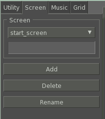
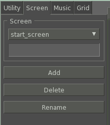
World View and Screen View
By default the Engine start in the World View. In order to access Screens we need to switch to the Screen View. On the right of the Engine Interface there is a button called Screen View. It's a toggle button, when the button is activated we goes in Screen View, when it's desactivated we come back to the World View.
 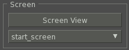
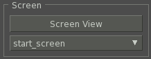
The current View mode is also displayed on the bottom right of the canvas.
 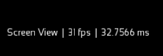
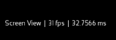
Just below the Screen View button there is a list that allows to select a Screen.
 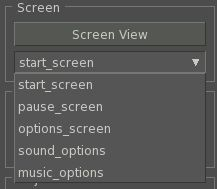
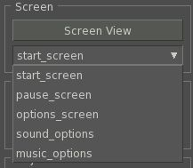
Build Screens
When a Screen is selected we can start building it. Each Screen has its own Canvas color, its own Grid, its own Camera, its own layers. Basically everything you do when a Screen is selected will affect only that Screen. Each Screen maintains its own Undos and Redos
Not all types of Objects can be added to a Screen. There is no Physics in a Screen, Therefore it's not possible to add Mesh_Objects, Meshed_Objects (Sprite with Mesh) and Animation_Meshed_Objects (Animation with Mesh) In Screens.
We can only add Sprite_Objects, Animation_Objects, Text_Objects and Button_Objects.
Button_Object is a new type of Object that can be add on Screens but not in the Game World, I will present it in my next post.
Screen and Grid
In my last post, I said that the Grid was important for Screens, it's time to know why. Screens are rendered on top of the Game World and they are not affected by the Camera movement. Therefore in order to be visible a Screen must be contained in a strict area. Since the Canvas is infinite it's become easy to be lost. This is were the Grid comes, if you plan to render your game in a 800 x 600 resolution or a 1024 x 800 resolution, you will have to configure a Grid of the same resolution with an offset of (0, 0). The Grid will represent the Screen area and everything in the Grid will be displayed.
That's all for this post, there is more on Screens but that will be for the next post. The video shows the different Screens I built for the Adventure Scene.
Twitter account
I opened a Twitter account some days ago, you can follow me and stay update any time on the Engine development.
Twitter - NeroGameEngine.
Scene Screens
Today we are going to talk Screens. This is a new feature in the Engine, I did not plan it for the first version, but I finally thought it would be cool to have it.
What is a Screen ?
First, let's begin by what most people know : Game States. In a Game we generally have several states like : the game levels (each level being a state), the start menu, the pause menu, the options menu and many more. In order to manage all those states people generally develop a Sates and States_Stack system. In this system you can switch between States by pushing or poping them.
Instead of using a State/States_Stack System, the Nero Game Engine will use two differents systems. the Screen System and the World Chunk System. Those two systems combined will offer more power than a simple State System.
- Screens :
- World Chunk :
Add, Delete and Rename Screens
On the top left of the Engine Interface, just after the Utility_Tab, we now have the Screen_Tab. From this tab, we can see all the available Screens, add new Screens, delete Screens or rename Screens.
Each Scene always has at least one Screen, you can delete any Screens but once it left only one Screen, the delete button will have no effect.
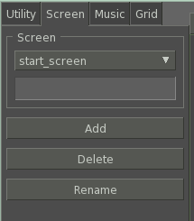World View and Screen View
By default the Engine start in the World View. In order to access Screens we need to switch to the Screen View. On the right of the Engine Interface there is a button called Screen View. It's a toggle button, when the button is activated we goes in Screen View, when it's desactivated we come back to the World View.
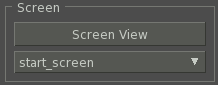The current View mode is also displayed on the bottom right of the canvas.
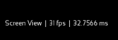Just below the Screen View button there is a list that allows to select a Screen.
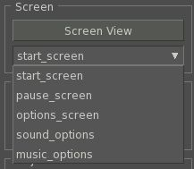Build Screens
When a Screen is selected we can start building it. Each Screen has its own Canvas color, its own Grid, its own Camera, its own layers. Basically everything you do when a Screen is selected will affect only that Screen. Each Screen maintains its own Undos and Redos
Not all types of Objects can be added to a Screen. There is no Physics in a Screen, Therefore it's not possible to add Mesh_Objects, Meshed_Objects (Sprite with Mesh) and Animation_Meshed_Objects (Animation with Mesh) In Screens.
We can only add Sprite_Objects, Animation_Objects, Text_Objects and Button_Objects.
Button_Object is a new type of Object that can be add on Screens but not in the Game World, I will present it in my next post.
Screen and Grid
In my last post, I said that the Grid was important for Screens, it's time to know why. Screens are rendered on top of the Game World and they are not affected by the Camera movement. Therefore in order to be visible a Screen must be contained in a strict area. Since the Canvas is infinite it's become easy to be lost. This is were the Grid comes, if you plan to render your game in a 800 x 600 resolution or a 1024 x 800 resolution, you will have to configure a Grid of the same resolution with an offset of (0, 0). The Grid will represent the Screen area and everything in the Grid will be displayed.
That's all for this post, there is more on Screens but that will be for the next post. The video shows the different Screens I built for the Adventure Scene.
In this post I will present more stuffs concerning Screens, and review
the state of the project.
Screens and Render Engine
While the DevEngine Interface allows to build Screens, the DevEngine is not able to render those Screens. Screens will be rendered only when the Scene is run within the RenderEngine. The reason for that is simply because the Screens are built arround a specific resolution. If you build a Screen with a resolution of 1028 x 800 by example, the Screen will not fit in the DevEngine Canvas.
Push and Drop Screens
The first thing to do when we want to use some Screens is to push them on the Screen_Stack. The methods pushScreen(screen_name) and dropScreen(screen_name) are there to manage the Screen_Stack. The only purpose of the Screen_Stack and those methods is to provide a way to order the rendering of the Screens. Also this allows to use only the Screens you need. You can create 10 Screens from the DevEngine but only push and use 3 of them.
Show and Hide Screens
Push a Screen into the Screen_Stack will not make the Screen visible. Pushing is just a way to order the Screen. Any Screen on the Screen_Stack can be make visible or hidden with the methods showScreen(screen_name) and hideScreen(screen_name).
Hide and Show the Game World
The Screens are rendered on top of the Game World, but if you want to show a Screen but not the World like for a Game Main Menu, it's possible to hide and show the Game World with the methods hideWorld() and showWorld().
Find Objects in a Screen
There are two methods to find Objects in a Screen
Button Object
In addition to the Screen System the Engine now has a little UI Management System. On each Screen it's possible to add some nero::UIObject. Currently the only available UIObject is the ButtonObject.
In order to add a ButtonObject just hold the Shift Key and click on a Sprite_Button. In the DevEngine a Button is simply a Sprite, so you can apply any Sprite transformations on it.
In the future it will be possible to create ButtonObject from Animation and Text. And there will be more UIObject like TooggleButton, CheckBox etc.
A ButtonObject offers three callBacks.
By default the opacity (color alpha) of the Buttons change when the mouse comes hover them.
Scenes Util methods
the nero::Scene now offers some cool new methods
What Next ?
I updated the Adventure Scene with some Screens. In the following video you can see the Custom Loading Screen of the Scene, and its different Menus. We are now close to the Engine First Version, but the most important thing remains to be done : Build an actual game.
Now that I have the skeleton of the Adventure Scene set up, It's time to comes up with a Game Play. I think it will be the coolest part of the project
Screens and Render Engine
While the DevEngine Interface allows to build Screens, the DevEngine is not able to render those Screens. Screens will be rendered only when the Scene is run within the RenderEngine. The reason for that is simply because the Screens are built arround a specific resolution. If you build a Screen with a resolution of 1028 x 800 by example, the Screen will not fit in the DevEngine Canvas.
Push and Drop Screens
The first thing to do when we want to use some Screens is to push them on the Screen_Stack. The methods pushScreen(screen_name) and dropScreen(screen_name) are there to manage the Screen_Stack. The only purpose of the Screen_Stack and those methods is to provide a way to order the rendering of the Screens. Also this allows to use only the Screens you need. You can create 10 Screens from the DevEngine but only push and use 3 of them.
Show and Hide Screens
Push a Screen into the Screen_Stack will not make the Screen visible. Pushing is just a way to order the Screen. Any Screen on the Screen_Stack can be make visible or hidden with the methods showScreen(screen_name) and hideScreen(screen_name).
Hide and Show the Game World
The Screens are rendered on top of the Game World, but if you want to show a Screen but not the World like for a Game Main Menu, it's possible to hide and show the Game World with the methods hideWorld() and showWorld().
Find Objects in a Screen
There are two methods to find Objects in a Screen
- The method findScreenObject(screen_name, object_name) will retrieve any Object that is not a UIObject (Sprite, Animation, Text).
- The method findScreenUIObject(screen_name, ui_object_name) will retrieve only UIObjects (Button);
Button Object
In addition to the Screen System the Engine now has a little UI Management System. On each Screen it's possible to add some nero::UIObject. Currently the only available UIObject is the ButtonObject.
In order to add a ButtonObject just hold the Shift Key and click on a Sprite_Button. In the DevEngine a Button is simply a Sprite, so you can apply any Sprite transformations on it.
In the future it will be possible to create ButtonObject from Animation and Text. And there will be more UIObject like TooggleButton, CheckBox etc.
A ButtonObject offers three callBacks.
button->setOnMouseEnter( [](){ a
lambda function here });
button->setOnMouseLeave( [](){ a lambda function here });
button->setOnMouseClick( [](){ a lambda function here });
button->setOnMouseLeave( [](){ a lambda function here });
button->setOnMouseClick( [](){ a lambda function here });
By default the opacity (color alpha) of the Buttons change when the mouse comes hover them.
Scenes Util methods
the nero::Scene now offers some cool new methods
//Manage the Scene
lifetime
pauseScene()
resumeScene()
resetScene()
quiScene()
//Play with the Canvas Color
getCanvasColor();
getScreenCanvasColor(screen_name)
setCanvasColor(sf_color)
//Manage Logs
log(message, level)
logIf(message, condition, level)
std_function getLog();
std_funtion getLogIf();
//Others
isRenderEngine() //Is the Scene running from the DevEngine or the RenderEngine
isScenePause() //Is the Scene in pause state
pauseScene()
resumeScene()
resetScene()
quiScene()
//Play with the Canvas Color
getCanvasColor();
getScreenCanvasColor(screen_name)
setCanvasColor(sf_color)
//Manage Logs
log(message, level)
logIf(message, condition, level)
std_function getLog();
std_funtion getLogIf();
//Others
isRenderEngine() //Is the Scene running from the DevEngine or the RenderEngine
isScenePause() //Is the Scene in pause state
What Next ?
I updated the Adventure Scene with some Screens. In the following video you can see the Custom Loading Screen of the Scene, and its different Menus. We are now close to the Engine First Version, but the most important thing remains to be done : Build an actual game.
Now that I have the skeleton of the Adventure Scene set up, It's time to comes up with a Game Play. I think it will be the coolest part of the project
Engine
Update
Hi everyone, how do you do.
Last week I was about to continue working on the Adventure Scene, but something stoped me. I felt that the Engine was missing some key features. So I went to add some features that wasn't in the schedule.
The Scene Renderer
It is now possible to see the final result of your game without leaving the DevEngine. The Engine now has a feature call the Scene Renderer. The Renderer simulates the behavior of the RenderEngine from within the DevEngine.
How to start the Renderer ?
Above the Canvas, along with the buttons Play, Pause etc, there is now a button called Render. Click on this button will launch the Scene Renderer.
Window resolution
From your nero::Scene you can now set the resolution of your game with the method below. This resolution indicates the size of the Window used by the Scene Renderer.
The Color Picker
The last week I tried ImGUI for the first time, and I was like : ooooooooooooh, waaaaah !!!, this is too too powerfull !!. So I quickly start to learn how it works and decided to integrate its Color Picker in the Engine.
Yeah, now there is a Color Picker . By default the Color Picker is Hidden, but when you go to the Color_Tab it appears automatically.
CodeBlocks Integration
Since the Engine uses CodeBlocks, I thought it would be great if CodeBlocks could generate a sample project for the Engine. So I went to learn the CodeBlocks scripting API, and I created a script that generates a Nero Game Project. Just for info Codeblocks calls that a Wizard, and it uses the Squirrel scripting language.
In the video below you can see the Nero Game Project Wizard in action. There are three types of samples you can generate. The coolest one is called Full Project. When you choose that, you can indicate a Namespace, some Class Names and CodeBlocks will create a complet project to start with.
Release of Version 0.9.0
In two or three weeks I will release a new version of the SDK, it will contains all the updates since the last one (version 0.7.1). The Adventure Scene will be included as an example.
That's all for this post. I think it will be my last post for 2018. So see you in 2019. Have a good day
Hi everyone, how do you do.
Last week I was about to continue working on the Adventure Scene, but something stoped me. I felt that the Engine was missing some key features. So I went to add some features that wasn't in the schedule.
The Scene Renderer
It is now possible to see the final result of your game without leaving the DevEngine. The Engine now has a feature call the Scene Renderer. The Renderer simulates the behavior of the RenderEngine from within the DevEngine.
How to start the Renderer ?
Above the Canvas, along with the buttons Play, Pause etc, there is now a button called Render. Click on this button will launch the Scene Renderer.
Window resolution
From your nero::Scene you can now set the resolution of your game with the method below. This resolution indicates the size of the Window used by the Scene Renderer.
setResolution(1024.f, 600.f);
The Color Picker
The last week I tried ImGUI for the first time, and I was like : ooooooooooooh, waaaaah !!!, this is too too powerfull !!. So I quickly start to learn how it works and decided to integrate its Color Picker in the Engine.
Yeah, now there is a Color Picker . By default the Color Picker is Hidden, but when you go to the Color_Tab it appears automatically.
CodeBlocks Integration
Since the Engine uses CodeBlocks, I thought it would be great if CodeBlocks could generate a sample project for the Engine. So I went to learn the CodeBlocks scripting API, and I created a script that generates a Nero Game Project. Just for info Codeblocks calls that a Wizard, and it uses the Squirrel scripting language.
In the video below you can see the Nero Game Project Wizard in action. There are three types of samples you can generate. The coolest one is called Full Project. When you choose that, you can indicate a Namespace, some Class Names and CodeBlocks will create a complet project to start with.
Release of Version 0.9.0
In two or three weeks I will release a new version of the SDK, it will contains all the updates since the last one (version 0.7.1). The Adventure Scene will be included as an example.
That's all for this post. I think it will be my last post for 2018. So see you in 2019. Have a good day
Nero
Game Engine 0.9.0 Released
Hi ! everyone. How do you do. I'm happy to announce the release of the Engine SDK version 0.9.0
You can download it from the website
I tried to upload it several times, my internet connection failed me. But it succeed in the end
The Website is still in construction I will work on it on the upcomming weeks and months
Test Scene : The Adventure Scene
In the package there is a Project called Adventure Scene you can use it as a reference. It's a simple game where you have to collect some coins and some stars.
If you've already tried the version 0.7.1 there are many changes. I have commented the code, so it should be easy to understand what is going on.
Tutorials
In the upcomming weeks I will write some new tutorials. I will upload them on the website in a structured manner.
Nero Game Engine version 1.0
The version 1.0 is comming soon. There are basically three things to be done before to reach that release
1- Add some game related features (camera shaking, bullet firing and maybe more)
2- Build a complet game that will serve as a Demo
3- Run a complet test of the Engine. Track bugs and solve everything that can besolved
That's all, hope you'll enjoy the new SDK. Have a good day
Hi ! everyone. How do you do. I'm happy to announce the release of the Engine SDK version 0.9.0
You can download it from the website
I tried to upload it several times, my internet connection failed me. But it succeed in the end
The Website is still in construction I will work on it on the upcomming weeks and months
Test Scene : The Adventure Scene
In the package there is a Project called Adventure Scene you can use it as a reference. It's a simple game where you have to collect some coins and some stars.
If you've already tried the version 0.7.1 there are many changes. I have commented the code, so it should be easy to understand what is going on.
Tutorials
In the upcomming weeks I will write some new tutorials. I will upload them on the website in a structured manner.
Nero Game Engine version 1.0
The version 1.0 is comming soon. There are basically three things to be done before to reach that release
1- Add some game related features (camera shaking, bullet firing and maybe more)
2- Build a complet game that will serve as a Demo
3- Run a complet test of the Engine. Track bugs and solve everything that can besolved
That's all, hope you'll enjoy the new SDK. Have a good day
Engine
Update
Hi everyone, how do you do ! here is an Engine update
Bug fix 1 : Duplicate collisions
If you've tried the Adventure Scene, you might have encountered a bug when collecting coins. Some coins can be collected more than once. That's because when a Physic_Object is removed by the Object_Manager, the Physic_Object is not destroyed directly, instead it is marked as dead and removed only when the Engine thinks the time is right. Now there is a control that prevent dead objects to generate a collision.
Bug fix 2 : Crash at Scene Renderer exit
The Scene Renderer crashes sometime when you exit it. This was due to the way resources are shared between the DevEngine and the Renderer. Now the resources shared as been reduced to the strict minimum and the Renderer will run on its own thread.
Bug fix 3 : Player flickering in Scene Renderer
There was a kind of flickering on the player when it moves in the Scene Renderer. It seems the Engine has some trouble rendering the DevEngine and the Renderer at the same time. Now when the Renderer is launched the DevEngine will stop its rendering (only a gray screen will be visible). The DevEngine rendering will come back automatically when the Renderer is closed. With that change the Scene Renderer now performs with the same quality as the nero::RenderEngine.
Download the Update.
You can download the update with the link below. The download contains a folder named Library. Just copy this folder into your current SDK folder and replace all files. The files that will be replaced are the following
Library/lib/libnero.dll.a
Library/bin/libnero.dll
Library/include/Nero/[all files]
Hi everyone, how do you do ! here is an Engine update
Bug fix 1 : Duplicate collisions
If you've tried the Adventure Scene, you might have encountered a bug when collecting coins. Some coins can be collected more than once. That's because when a Physic_Object is removed by the Object_Manager, the Physic_Object is not destroyed directly, instead it is marked as dead and removed only when the Engine thinks the time is right. Now there is a control that prevent dead objects to generate a collision.
Bug fix 2 : Crash at Scene Renderer exit
The Scene Renderer crashes sometime when you exit it. This was due to the way resources are shared between the DevEngine and the Renderer. Now the resources shared as been reduced to the strict minimum and the Renderer will run on its own thread.
Bug fix 3 : Player flickering in Scene Renderer
There was a kind of flickering on the player when it moves in the Scene Renderer. It seems the Engine has some trouble rendering the DevEngine and the Renderer at the same time. Now when the Renderer is launched the DevEngine will stop its rendering (only a gray screen will be visible). The DevEngine rendering will come back automatically when the Renderer is closed. With that change the Scene Renderer now performs with the same quality as the nero::RenderEngine.
Download the Update.
You can download the update with the link below. The download contains a folder named Library. Just copy this folder into your current SDK folder and replace all files. The files that will be replaced are the following
Library/lib/libnero.dll.a
Library/bin/libnero.dll
Library/include/Nero/[all files]
Hi everyone,
hope you are doing great !
Engine Update
Bug fix : Physic Objects Center of Mass
In the current version of the Engine, Physic Objects (Box2D bodies) don't have their center of mass at the right place. The bug exists since the early versions of the Engine. I did not bother to solve it until now. It's a good thing to have this bug solved because now it's more easy to play with Box2D Joints.
Physic Objects new methods
With the center of mass bug fixed, it's now possible to retrieve the size and the bounds (AABB) of a Physic Object.
Physic Objects Joints
Here is a feature I did not plan to add in the first version, but after I solved the center of mass bug, I said why not ?
11 Joint Types have been integrated in the Engine API
01- Distance Joint
02- Friction Joint
03- Gear Joint
04- Motor Joint
05- Mouse Joint
06- Prismatic Joint
07- Pulley Joint
08- Revolute Joint
09- Rope Joint
10- Weld Joint
11- Wheel Joint
Create Joints is pretty easy. For each Joint you have a JointProperty object that describes the Joint parameters. The code below shows how to create a Distance Joint between two Objects.
Most of the parameters in a JointProperty depends on of the Joint Type. But all JointProperty has a parameter for the Joint Name.
Find Joints
A Joint can be found using its name. The find method return a generic nero::PhysicJoint object. For each Joint Type you have a static Cast() method.
Remove Joints
A Joint can be removed using its name. If the deletion succeed the ObjectManager will return true.
Release of Version 1.0.0
Seems the time to wrap up the Project and deliver a first version has come. The version 1.0.0 will be released on April the first. Until that I will fix all bugs I can found. Most important I'll need to resit to the desire of adding new features
Website and Tutorials
I don't have much time to work on the Engine and the Website now. So I'll focus on the Engine and begin to work on the website after the first version is released.
Engine Update
Bug fix : Physic Objects Center of Mass
In the current version of the Engine, Physic Objects (Box2D bodies) don't have their center of mass at the right place. The bug exists since the early versions of the Engine. I did not bother to solve it until now. It's a good thing to have this bug solved because now it's more easy to play with Box2D Joints.
Physic Objects new methods
With the center of mass bug fixed, it's now possible to retrieve the size and the bounds (AABB) of a Physic Object.
vector2f
size =
physic_object->getSize();
sf::FloatRect bound = physic_object->getGlobalBounds();
sf::FloatRect bound = physic_object->getGlobalBounds();
Physic Objects Joints
Here is a feature I did not plan to add in the first version, but after I solved the center of mass bug, I said why not ?
11 Joint Types have been integrated in the Engine API
01- Distance Joint
02- Friction Joint
03- Gear Joint
04- Motor Joint
05- Mouse Joint
06- Prismatic Joint
07- Pulley Joint
08- Revolute Joint
09- Rope Joint
10- Weld Joint
11- Wheel Joint
Create Joints is pretty easy. For each Joint you have a JointProperty object that describes the Joint parameters. The code below shows how to create a Distance Joint between two Objects.
//Retrieve Objects
(Physic_Object, Solid_Object or Aniamtion_Solid_Object)
auto object_A = getObjectManager()->findObject("object_a");
auto object_B = getObjectManager()->findObject("object_b");
//Create a Distance Joint
nero::DistanceJointProperty property;
getObjectManager()->createJoint(object_A, object_B, property);
auto object_A = getObjectManager()->findObject("object_a");
auto object_B = getObjectManager()->findObject("object_b");
//Create a Distance Joint
nero::DistanceJointProperty property;
getObjectManager()->createJoint(object_A, object_B, property);
Most of the parameters in a JointProperty depends on of the Joint Type. But all JointProperty has a parameter for the Joint Name.
nero::DistanceJointProperty
property;
property.name = "distance_joint_01";
property.name = "distance_joint_01";
Find Joints
A Joint can be found using its name. The find method return a generic nero::PhysicJoint object. For each Joint Type you have a static Cast() method.
nero::PhysicJoint::Ptr my_joint =
getObjectManager()->findJoint("distance_joint_01");
nero::DistanceJoint::Ptr distance_joint = nero::DistanceJoint::Cast(my_joint);
nero::DistanceJoint::Ptr distance_joint = nero::DistanceJoint::Cast(my_joint);
Remove Joints
A Joint can be removed using its name. If the deletion succeed the ObjectManager will return true.
bool removed =
getObjectManager()->removeJoint("distance_joint_01");
Release of Version 1.0.0
Seems the time to wrap up the Project and deliver a first version has come. The version 1.0.0 will be released on April the first. Until that I will fix all bugs I can found. Most important I'll need to resit to the desire of adding new features
Website and Tutorials
I don't have much time to work on the Engine and the Website now. So I'll focus on the Engine and begin to work on the website after the first version is released.
Hi everyone,
hope you are doing great
Nero Game Engine 1.0 released
The Engine first version is now released. The SDK can be downloaded on the Engine Website. It was fun to develop the Engine. There are many features that was planned that did not make their way into the first version, But there are also other that was not planned that endup in the first version. I guess it's how projects work
Website & Tutorials
From now on, I will focus on building the Website, I plan to do some videos tutorial and maybe write some articles on game development.
Nero Game Engine 2.0
Developing the Engine was pretty cool, so I plan to continue with a second version more powerfull. The second version will focus on three things
1- Cross platform with focus on Androind, IOS and Nintendo Switch (or its successor);
2- Introduction of Lua as scripting lauguage
3- A more powerfull Editor and more features in a Scene
Nero Game Engine 1.0 released
The Engine first version is now released. The SDK can be downloaded on the Engine Website. It was fun to develop the Engine. There are many features that was planned that did not make their way into the first version, But there are also other that was not planned that endup in the first version. I guess it's how projects work
Website & Tutorials
From now on, I will focus on building the Website, I plan to do some videos tutorial and maybe write some articles on game development.
Nero Game Engine 2.0
Developing the Engine was pretty cool, so I plan to continue with a second version more powerfull. The second version will focus on three things
1- Cross platform with focus on Androind, IOS and Nintendo Switch (or its successor);
2- Introduction of Lua as scripting lauguage
3- A more powerfull Editor and more features in a Scene
Hi everyone how
do you do !
Engine Update 1.0.1
The Update can be donwloaded from the
The installation is pretty easy. Just copy the content of the Update Folder into The Engine SDK Folder and choose yes when asked to overwrite the files.
**Important : The Update contains a file called Release. This file describes all the changes, please read this file before to install the Update.
This update is mainly a bug fix
When you render a Scene from the Dev_Engine using the [Render_Button] on top of the Canvas, a new Window opens up with a certain size. This size is specified in your Scene with the code below
The problem ? it does not work
The Update removes the two methods
The Scene Renderer window Resolution is now manage by a new method
Engine Update 1.0.1
The Update can be donwloaded from the
The installation is pretty easy. Just copy the content of the Update Folder into The Engine SDK Folder and choose yes when asked to overwrite the files.
**Important : The Update contains a file called Release. This file describes all the changes, please read this file before to install the Update.
This update is mainly a bug fix
When you render a Scene from the Dev_Engine using the [Render_Button] on top of the Canvas, a new Window opens up with a certain size. This size is specified in your Scene with the code below
void
MyScene:init()
{
//set the Scene Renderer Window Resolution
setResolution( width, height );
}
{
//set the Scene Renderer Window Resolution
setResolution( width, height );
}
The problem ? it does not work
The Update removes the two methods
//Methods removed.
setResolution( width, height );
getResolution();
setResolution( width, height );
getResolution();
The Scene Renderer window Resolution is now manage by a new method
sf::Vector2f
MyScene::getSceneResolution()
{
//return the resolution size you want
return sf::Vector2f( width, height );
}
void MyScene:init()
{
//nothing to put here. the configuration of the resolution is no longer done in the init() method
}
{
//return the resolution size you want
return sf::Vector2f( width, height );
}
void MyScene:init()
{
//nothing to put here. the configuration of the resolution is no longer done in the init() method
}
Hi everyone ! How do you do. I've been silent for the last few months, I've been really busy. I recently moved to Montréal in order to complete a degree. this took off all my free time. The good thing with that is that I will be following a class on Video Game AI. The class is offered by people from Ubisoft. It's my chance to learn Unreal Engine and Video Game AI.
Nero Game Engine 2
I've made some progress on the Engine new Interface. Here are a few screenshots. The Interface is at a very early stage, but it will evolve quickly.
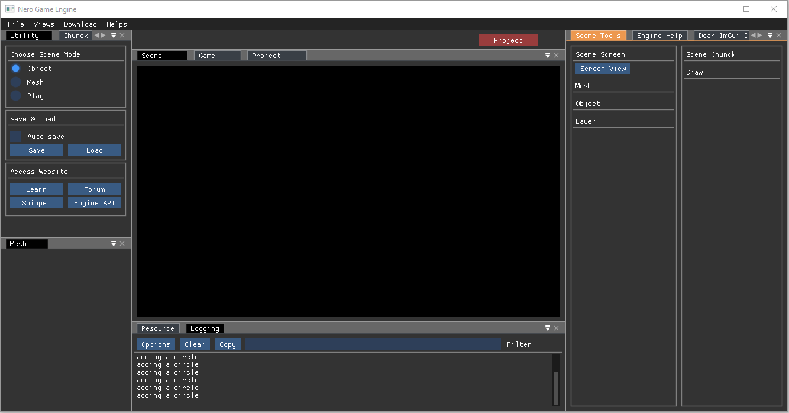

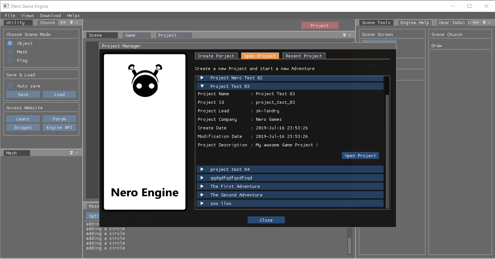

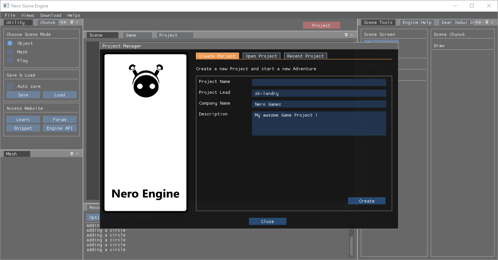

What will I be working on now ?
I will be working on the Nero Game Engine 2. In my next post, I will probably be talking about the Nero Game Engine 2 key Concepts and its new Resource Manager.
I had planned to make Video Tutorials on Youtube, but that will have to wait the next summer, I don't have a lot of time to record and edit videos and I need to focus on my studies.
Nero Game Engine 2 : Engine Update
Hi everyone, how do you do ? Today I am happy to announce that I started working on a regular basis on the Nero Game Engine 2. In this first update post, I will present the scope of the project and some new features.
The Project
The objective of the project is to build a Professional 2D Game Engine based on SFML. The first release of this new Game Engine will provide the possibility to deploy your Games on Windows, Android, and Steam. The Engine will try to consume all the SFML API and go further. It's a pretty big project, but things will be done one step at a time, little by little. As you already know, a major difference with the first Nero Game Engine will be the new Interface.
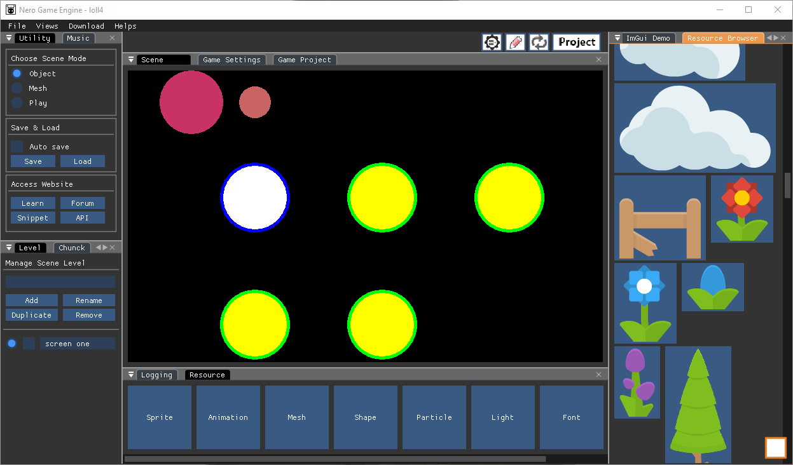

A New Approach to C++ Project
Unlike the first version of the Engine, the Nero Game Engine 2 will be available as an Editor like Unreal Engine or Unity. On Windows, you will just have to download and install the Engine like any other software. With this Engine you will be able to choose between three types of projects depending on your skill with each language : C++ only Project, Lua only Project, and C++ & Lua Project.
Here is a question : How do you build your game in C++ if the Engine comes as an Editor? The answer : Shared Library.
With the New Engine, It is now possible to create and compile your C++ Project from the Engine Editor as Unreal Engine does. Each C++ Project is compiled as a Shared Library that is then loaded at runtime.
Choose your Code Editor
The Engine does not have an built-in Code Editor, so you will need an external one. The Engine will support two Editor at launch. Qt Creator and Visual Studio
Right now the Engine is being developed with Qt Creator, so it will be the default Code Editor. The External Code Editor you choose will be seamlessly integrated into the Engine. That means you will be able to open the Code Editor from the Engine Editor.
Let's see the new Engine at work
Create a C++ Project
In the video below, I launch the Engine Editor, after a nice Loading Screen, the Engine new Interface appeared. I then proceed to create a new Workspace called "My Workspace" on my Desktop. I will talk about workspaces in a later post. When the workspace is ready I create a new C++ Project (CPP Project) called "My First Project" in that workspace. When I click on the button "Create", the Engine Generates my project files and Compiles them.
Open my Project
When the compilation is completed the Engine asks me if I want to open the Project, I click on "Open Project", the Qt Creator Code Editor is automatically launched. Since it is the first time I open the project with Qt, it asks me to choose a Kit or Import a build.
Import my Build
The Engine already compiled the project, so you just have to import the build generated during the compilation. Qt creator detects automatically the build done by the Engine, In order to import it, I select " Imported Kit - temporary" then I select "Build (my/desktop/path/My Workspace/my_first_project/Build)", Then I click on configure project.
Start coding
Like in the first version of the Engine, the base Class of your game is the nero::Scene Class. The Engine generates a Scene class base on the name of your project In this case "MyFirstProjectScene";
I go to the render() method, I draw a simple SFML Circle and compile the project. I can compile the project from Qt Creator or the Engine Editor. When compiling from the Engine Editor there is a little Orange and White box on the bottom right indicating the status of the build. When the build is completed I reload the code.
What Next?
In my next post, I will talk about Workspaces and Project directory Structure. Also, I will present the Engine new Resource Browser and Resource Manager features. until then have a good day.
Nero Game Engine 2 : Engine Update
Hi everyone, how do you do? I have been working on the Engine over the last couple of weeks, I made a lot of progress.
Coding with Visual Studio
Visual Studio is now integrated into the Engine, When you create a new Project, you can choose between Visual Studio and Qt creator for the Code Editor. You can compile the code from Visual Studio or the Engine Editor seamlessly.
Playing with the new Canvas
I begin transferring the features of the Nero Game Engine 1 to the new Engine and it works perfectly.
Designing the new Scene API
I am currently designing the new Scene API, with the Nero Game Engine 2, I introduce the notion of Game Level, World Chunk, and Scene Factory.
To put things simply, a Game is made of a unique Game World that is divided into Game Levels, each Game Level will be divided into several World Chunks. World chunks are small parts of the World that can be loaded or unloaded during Play Time.
The Scene Factory will be a new feature that allows you to create Game Objects at Play Time. Those Game Objects can then be spawned into the World.
The main challenge with this new API will be on Resource Management. When World chunks are loaded or unloaded the Engine will have to automatically load or unload resources from memory. I am currently thinking of a way to keep track of used and unused resources.
That's all
There are more new features to present, but that will be for another post. have a good day
I plan to diversify the game genres the Engine is able to handle. What I have in mind is
- Platformer : action, shooting, adventure
- Top Down : RPG, Scroller
- Fighting Game : like Street Fighter
- Card and Board Games
I have been playing with Unreal Engine and Unity lately, I took ideas from them and begin designing a new game development API for the Engine. the new API will make the Engine flexible on the type of game it can handle.
For now I'm focusing more on the Engine core, I believe if I get it right, adding more genre-specific features in the future will be pretty easy.
Nero Game Engine 2 : Engine Update
Hi everyone how do you do?
Playing With Light
I have integrated Let There Be Light into the Engine. For now, it is a partial integration. It's possible to add Point Lights into the Game World and Static Physic Objects can block light;
CPU Profiling
The Engine now has a CPU Profiler integrated, the one I've chosen is Easy Profiler(https://github.com/yse/easy_profiler). It is very simple to use and can become very useful if you decide to build a pretty large Game.
What's Next ?
The next release of the Engine will be the Nero Game Engine 2 . It will be available somewhere during this next summer. Up until now, I was mostly experimenting with new features for the Engine. The code is currently a big mess Now that I feel I know what am doing, I have decided on the new features that will be on the next release. The release will focus on the Engine new Interface, a New Scene API, and the Deployment of Games on Android. I had planned some features like Lua Scpriting, Shaders, Particle System, but that will be for the version 1.2.0.
Back to the Website
Now that I am confident with the development of the New Engine, It is time to return to work on the Engine Website (https://nero-games.com). I will continue the tutorial for the Nero Game Engine 1 and maybe write some random articles on game programming.
Hi everyone! how to you do I have been busy the last couple of months, but I manage to get some time and progress with the Engine
Release of a Demo Version on May
I will release a reduced version of the New Engine around mid-may, Many features currently in development will be disabled for the demo. The core features of the New Engine Editor will be available , you will able to create projects and code in raw SFML. I will give more details on my next post.
Nero Game Engine 2 : Engine Update
Now let's do a regular update
Introducing the POCO library
I have been looking for a Network Library for a while now. I came across POCO recently and I was amazed by the features it provides. It's a pretty huge library like Boost. I integrated it into the Engine.
Also, the Engine now use C++17 Experimental. All the Boost libraries that need to be compiled as been removed.
Download Files with the Engine
Thanks to POCO you can now download files with the Engine. I begin building a Network Module for the Engine. The most interesting Class for now is the nero::DownloadManager. It provides two features.
The first feature is to retrieve the size of a file on the internet using a HTTPS request.
The second feature is to download a file on the internet and monitor the download progression.
//get a file size
float bytes = nero::DownloadManager::getFileSize("https/my/file/url");
//the pretty_string method print the size in a readable format like 600 KB, or 8.6 MB etc
nero_log(nero::DownloadManager::getPrettyString(bytes));
nero::DownloadProgression::Ptr progression = nero::DownloadManager::downloadFile("https/my/file/url", "local/path/destination");
while(progression->isDownloading())
{
//print the percentage [0 - 100]
nero_log(progression->getPercentage());
}
float bytes = nero::DownloadManager::getFileSize("https/my/file/url");
//the pretty_string method print the size in a readable format like 600 KB, or 8.6 MB etc
nero_log(nero::DownloadManager::getPrettyString(bytes));
nero::DownloadProgression::Ptr progression = nero::DownloadManager::downloadFile("https/my/file/url", "local/path/destination");
while(progression->isDownloading())
{
//print the percentage [0 - 100]
nero_log(progression->getPercentage());
}
A New Logging API
With the introduction of POCO, I removed the Easyloggingpp Library. The Logger offered by POCO is more flexible and adapted for the Engine needs.
As a user of the Engine, nothing changes for you, the macros nero_log and nero_log_if are still available and work the same.
Background Task Management
The New Engine will be using a lot of threads to perform tasks in the background. The Engine now offers a new class called nero::BackgroundTaskManager or simply nero::BTManager. The class is used like that nero::BTManager::startTask(callable, task_name, task_category), The callable can be a function pointer, a lambda or a class method.
class
MyClass
{
void helloWorld(nero::BackgroundTask::Ptr task)
{
task->addMessage("starting project compilation");
//to something
task->addMessage("compilation, completed");
task->setCompleted(true);
}
}
MyClass instance;
nero::BTManager::startTask(MyClass::helloWorld, &instance, "compile_project");
auto my_task = nero::BTManager::findTaskByName("compile_project");
{
void helloWorld(nero::BackgroundTask::Ptr task)
{
task->addMessage("starting project compilation");
//to something
task->addMessage("compilation, completed");
task->setCompleted(true);
}
}
MyClass instance;
nero::BTManager::startTask(MyClass::helloWorld, &instance, "compile_project");
auto my_task = nero::BTManager::findTaskByName("compile_project");
That's all for this post !
There are many other features in development, I will talk more about that during the summer. Here is what the Editor currently looks like. There is now a nice Toolbar, a Menu Bar, the Logging work perfectly. As with the Nero Game Engine 1, you have the mouse position on top of the canvas and the four buttons to change the canvas color
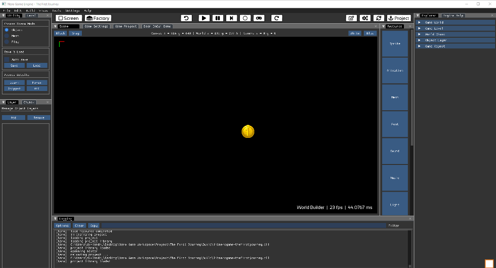
Nero
Game Engine d2.0.1 Released
Hi everyone ! how do you do , I am happy to announce the release of the Engine Demo version 2.0.1
The Engine is provided with a BSD Licence
You can download it here :
It's my first time releasing an installable software, if you find any problem please let me known.
The Configuration Wizard
When the Engine starts, it checks that everything is ok before you can use it. When something is not ok the Configuration Wizard will help to configure it.
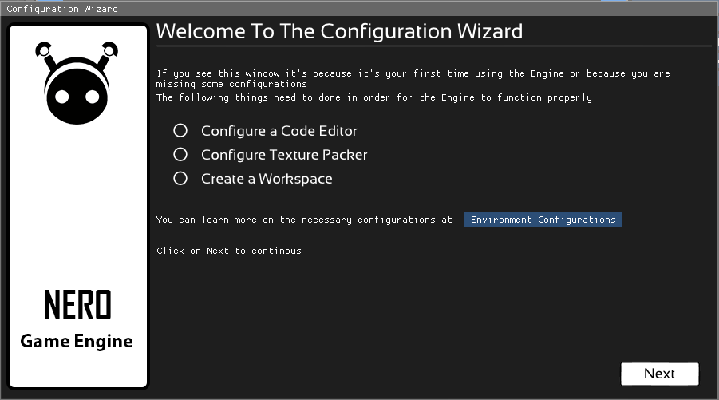
Configure a Code Editor
You can choose between Qt Creator or Visual Studio 2019
Visual Studio 2017 will not work, only the latest versions of Visual Studio 2019 are compatible.
You can download Qt offline with the link provided by the wizard or search "qt online installer" on the internet.
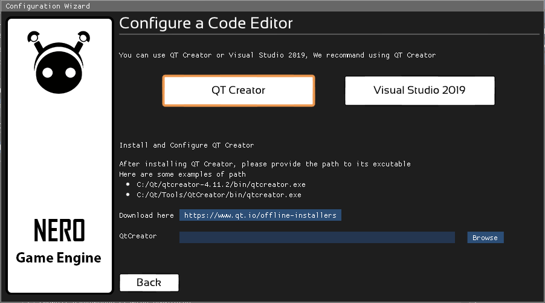
Configure Texture Packer
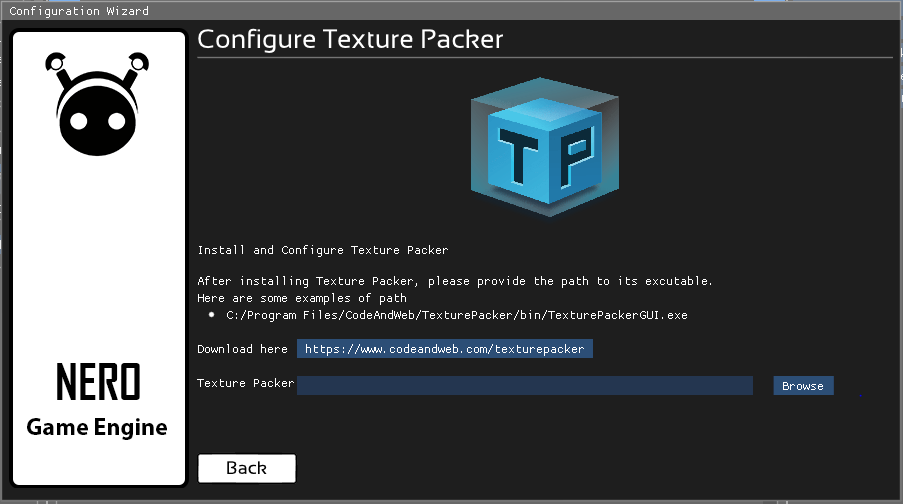
Configure a Workspace
The Engine needs at least one Workspace. If you already have one you can import it, if not, you need to create one.
All inputs are checked against a regex and need to match a certain pattern. For example, the namespace should only have 2 to 10 characters and only use letters (regex = ^[a-zA-Z]{2,10}). I will explain everything in detail later.
Here is an example of input

Hi everyone ! how do you do , I am happy to announce the release of the Engine Demo version 2.0.1
The Engine is provided with a BSD Licence
You can download it here :
It's my first time releasing an installable software, if you find any problem please let me known.
The Configuration Wizard
When the Engine starts, it checks that everything is ok before you can use it. When something is not ok the Configuration Wizard will help to configure it.
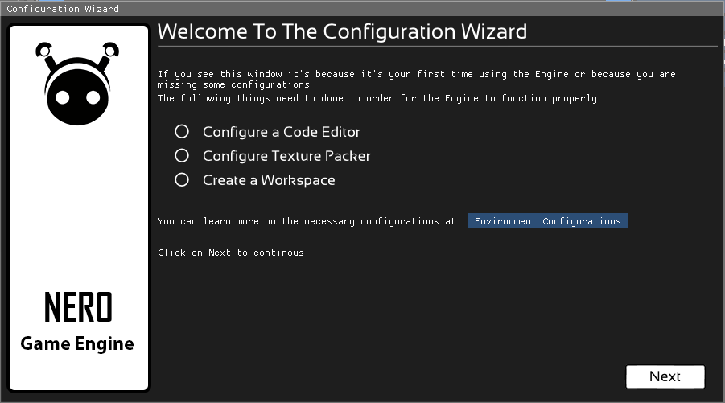
Configure a Code Editor
You can choose between Qt Creator or Visual Studio 2019
Visual Studio 2017 will not work, only the latest versions of Visual Studio 2019 are compatible.
You can download Qt offline with the link provided by the wizard or search "qt online installer" on the internet.
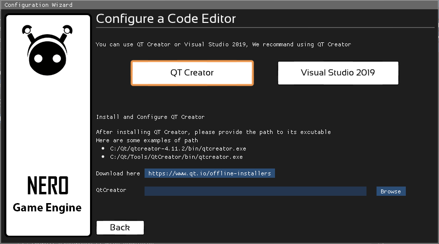
Configure Texture Packer
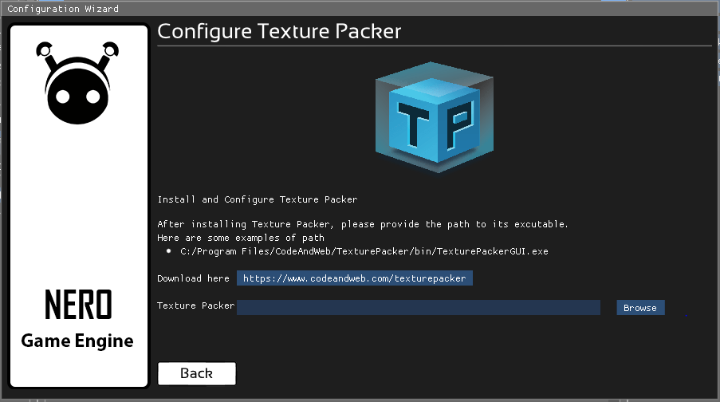
Configure a Workspace
The Engine needs at least one Workspace. If you already have one you can import it, if not, you need to create one.
All inputs are checked against a regex and need to match a certain pattern. For example, the namespace should only have 2 to 10 characters and only use letters (regex = ^[a-zA-Z]{2,10}). I will explain everything in detail later.
Here is an example of input
- Location : use the browse button and select your Desktop
- Workspace Name : My Workspace
- Company Name : Nero Games
- Project Lead : team-lead
- Project Namespace : ng
Hi there, how do you do?
First video tutorial released
I've just released a first video tutorial on the Nero Game Engine 2 Demo, watch it on you Youtube
https://www.youtube.com/channel/UCIR0nDUMGzJ3Pkpa3gDCUeQ
Nero Game Engine 1 SDK Update
I've just released a new version of the Nero Game Engine 1 SDK (r1.0.3). With this new update, you can now change the DevEngine Window size as you want.
The DevEngine has two constructors now
DevEngine(const unsigned int&
windowWidth, const
unsigned
int&
windowHeight);
DevEngine(const unsigned int& windowWidth);
DevEngine(const unsigned int& windowWidth);
With the first one, you specify the width and the height you want, with the second one you only specify the width and the engine will compute the height.
Important
There are a min-width (1305.f) and a min-height(670.f). If you set a value below these ones, the engine will ignore your inputs.
Example
nero::DevEngine
engine(1900.f, 1000.f);
//or
nero::DevEngine engine(1900.f);
//or
nero::DevEngine engine(1900.f);
How to update
You can download the full SDK already updated (Nero Game Engine SDK 1.0.3) or you can download the update only (Engine Update 1.0.3) and copy its content in your current installation
What next
Build the website and make tutorials
As of now, I will focus on building the Engine Website and making some youtube tutorials. I'll try to make 2 or 3 tutorials per week.
Engine development
I will slow down with the Engine 2 development in order to focus on tutorials. But just for info, the next thing I'll be working on is the Engine Android Backend. Like Unreal on Unity, the Engine will able to deploy your games on android automatically.
Hi everyone how do you do
Nero Game Engine 1 SDK Update 1.0.4
I've just released a new version of the Nero Game Engine 1 SDK version r1.0.4
I was working on a video tutorial when I found out that I've made a big, really big mistake with the last Engine Update I built the update 1.0.3 on top of the version 1.0.0, by doing so, the Engine lost the updates 1.0.1 and 1.0.2 [software regression
I just removed the update 1.0.3 from the website.
The first video tutorial should be ready by tomorrow, have a good day
Nero Game Engine 1 Tutorial Series
Hi there, how do you do do, I just uploaded the first video tutorial on the Nero Game Engine 1 on Youtube. The next video should be ready by tomorrow.
I will use twitter to announce new videos, so don't forget to follow me here : https://twitter.com/nerogameengine
Nero Game Engine r1.0.5 Released
I was preparing a tutorial on Physics Joints and I found a bug when creating a Wheel Joint. The new release fixes the bug, there are also other changes, some methods have been renamed, others have been added.
Here is the list of all changes:
Release
1.0.5 [Engine Update]
- [Bug Fix]
- in method nero::ObjectManager::createJoint, in the case of wheel-joint, fix property localAxisA
- in method nero::ObjectManager::findChildObject, check if input object is nullptr
- [Enhancement]
- remove "const" qualifier from method nero::Scene::getContext
- rename method nero::Scene::enableFollowTarget to nero::Scene::enableCameraTarget
- rename method nero::Scene::updateTargetOffset to nero::Scene::setCameraTargetOffset
- add new method nero::Scene::getCamera
- rename method nero::Collision::isCollising to nero::Collision::isColliding
- rename method nero::Collision::isObjectCollising to nero::Collision::isObjectColliding
- add new method nero::ObjectManager::getNewJointId
- move method nero::Scene::enableLayer to nero::ObjectManager::enableLayer
- move method nero::Scene::disableLayer to nero::ObjectManager::disableLayer
- rename all joint property maxMotorForce to maxMotorTorque
- rename method nero::Scene::followTarget to nero::Scene::followCameraTarget and make it overridable (virtual void)
- [Bug Fix]
- in method nero::ObjectManager::createJoint, in the case of wheel-joint, fix property localAxisA
- in method nero::ObjectManager::findChildObject, check if input object is nullptr
- [Enhancement]
- remove "const" qualifier from method nero::Scene::getContext
- rename method nero::Scene::enableFollowTarget to nero::Scene::enableCameraTarget
- rename method nero::Scene::updateTargetOffset to nero::Scene::setCameraTargetOffset
- add new method nero::Scene::getCamera
- rename method nero::Collision::isCollising to nero::Collision::isColliding
- rename method nero::Collision::isObjectCollising to nero::Collision::isObjectColliding
- add new method nero::ObjectManager::getNewJointId
- move method nero::Scene::enableLayer to nero::ObjectManager::enableLayer
- move method nero::Scene::disableLayer to nero::ObjectManager::disableLayer
- rename all joint property maxMotorForce to maxMotorTorque
- rename method nero::Scene::followTarget to nero::Scene::followCameraTarget and make it overridable (virtual void)
Physics Joints Tutorial
I have created a project where I experiment with all Joints. There are 11 Joints in total, So far I have implemented 8 Joints, 3 left to go
You can find the project on GitHub : https://github.com/NeroGames/enginev1-physicjoint
The project shows how to build a car with wheel-joints, how to build an elevator with prismatic-joint and many more
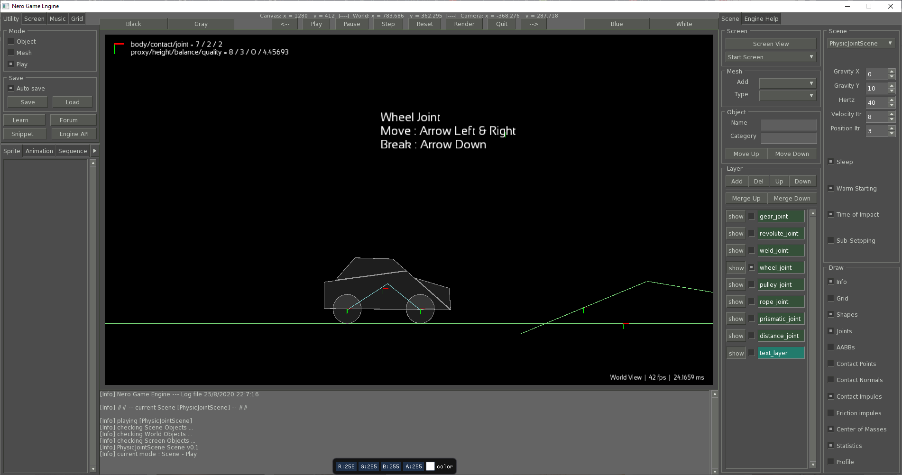

Nero
Game Engine SDK v1.0.6 Released
Hi everyone ! How do you do ? Happy new year
The Engine SDK v1.0.6 has been released, you can . I made a few bugs fixes and some improvement
Here are the major changes
1- No more Default_Scene
The Engine/Editor will not create a Default Scene if you add at least one Scene
2- nero::Editor alias
The nero::DevEngine can now be referred as nero::Editor by including the header <Nero/engine/Editor.h>. It's just an alias, both classes are exactly the same.
3- Linking Glew in the SDK
The SDK now comes with Glew autommtically linked. This allows you to create OpenGL projects without any configuration. If you want to learn OpenGL you can use the Engine SDK to do so.
4- New Info Tab
On the Editor left, along with the tabs Sprite, Animation, etc. there is a new tab called Info that shows the transform of a selected Object

5- Bug : Engine modes and Screen View
In Screen View, switching between the Editor modes (Object, Mesh, Play) was making the Editor crash. To fix that, I added the following rules
- Rule 1 : Activating the Screen View (pressing on Screen_View Button) is only possible when the Editor is in Object Mode.
- Rule 2 : When in Screen View it becomes impossible to change the Editor Mode. Pressing the Spacebar will have no effect. Checking the Checkboxes will be impossible (nothing happens if pressed
Here is the full Releases Notes
Hi everyone ! How do you do ? Happy new year
The Engine SDK v1.0.6 has been released, you can . I made a few bugs fixes and some improvement
Here are the major changes
1- No more Default_Scene
The Engine/Editor will not create a Default Scene if you add at least one Scene
2- nero::Editor alias
The nero::DevEngine can now be referred as nero::Editor by including the header <Nero/engine/Editor.h>. It's just an alias, both classes are exactly the same.
#include
<Nero/engine/Editor.h>
int main()
{
nero::Editor editor(1305);
editor.run();
return 0;
}
int main()
{
nero::Editor editor(1305);
editor.run();
return 0;
}
3- Linking Glew in the SDK
The SDK now comes with Glew autommtically linked. This allows you to create OpenGL projects without any configuration. If you want to learn OpenGL you can use the Engine SDK to do so.
4- New Info Tab
On the Editor left, along with the tabs Sprite, Animation, etc. there is a new tab called Info that shows the transform of a selected Object
5- Bug : Engine modes and Screen View
In Screen View, switching between the Editor modes (Object, Mesh, Play) was making the Editor crash. To fix that, I added the following rules
- Rule 1 : Activating the Screen View (pressing on Screen_View Button) is only possible when the Editor is in Object Mode.
- Rule 2 : When in Screen View it becomes impossible to change the Editor Mode. Pressing the Spacebar will have no effect. Checking the Checkboxes will be impossible (nothing happens if pressed
Here is the full Releases Notes
Release
1.0.6 [Engine
Update]
- [Bug Fix]
- fix crash when changing mode (object to mesh) in screen_view
- fix switching to play_mode with ctrl + spacebar not working
- fix random bomb spawn position does not follow camera
- [Enhancement]
- remove editor default_scene when a scene is added
- add alias nero::Editor for nero::DevEngine
- add editor render_window icon
- link Glew in SDK to allow the creation of openGL projects
- add new finders in nero::ObjectManager (find [Text, Animation, SolidAnimation])
- add InfoTab (display selected object transforms)
- prevent mode switching in screen_view
- screen_view activation only work in object_mode
- add doxygen documentation generation in CMakelists.txt
- add Doxygen and Graphviz (dot) binaries in SDK
- [Bug Fix]
- fix crash when changing mode (object to mesh) in screen_view
- fix switching to play_mode with ctrl + spacebar not working
- fix random bomb spawn position does not follow camera
- [Enhancement]
- remove editor default_scene when a scene is added
- add alias nero::Editor for nero::DevEngine
- add editor render_window icon
- link Glew in SDK to allow the creation of openGL projects
- add new finders in nero::ObjectManager (find [Text, Animation, SolidAnimation])
- add InfoTab (display selected object transforms)
- prevent mode switching in screen_view
- screen_view activation only work in object_mode
- add doxygen documentation generation in CMakelists.txt
- add Doxygen and Graphviz (dot) binaries in SDK
Build
a Multiplayer Game Server for the Engine
Yes, it's decided, the Nero Game Engine 2 will support online multiplayer games at launch . I've spent the last couple of weeks doing researches on how to create multiplayer games. I found this GitHub repo https://github.com/MFatihMAR/Game-Networking-Resources, super awesome, it contains many articles on how popular games like Doom and Quake multiplayer work. I also discovered Glenn Fiedler, a guy who worked on multiple video game network modules (like God of War ). His website https://gafferongames.com/ has lots of cool articles and he has also created his own multiplayer library called Yojimbo.
The difficult part
Since the Engine uses Box2D for physics, the most difficult issue will be to sync all clients with the server so they can have the same exact physic simulation. In a series of articles, https://gafferongames.com/post/introduction_to_networked_physics/ Glenn Fiedler presents three techniques.
What I decided for now
Choosing a library
I found multiple C++ libraries specialized in multiplayer gaming, the three that attract me the most are the following in order of preference. I will evaluate them and choose one.
If any of you has experience with multiplayer programming let me know any advice is welcome
Yes, it's decided, the Nero Game Engine 2 will support online multiplayer games at launch . I've spent the last couple of weeks doing researches on how to create multiplayer games. I found this GitHub repo https://github.com/MFatihMAR/Game-Networking-Resources, super awesome, it contains many articles on how popular games like Doom and Quake multiplayer work. I also discovered Glenn Fiedler, a guy who worked on multiple video game network modules (like God of War ). His website https://gafferongames.com/ has lots of cool articles and he has also created his own multiplayer library called Yojimbo.
The difficult part
Since the Engine uses Box2D for physics, the most difficult issue will be to sync all clients with the server so they can have the same exact physic simulation. In a series of articles, https://gafferongames.com/post/introduction_to_networked_physics/ Glenn Fiedler presents three techniques.
- Deterministic Lockstep
- Snapshot Interpolation (with Linear or Hermite Interpolation and Snapshot Compression)
- State Synchronization
What I decided for now
- Architecture: client/server with authoritative or semi-authoritative server
- Number of players: 4 players. (MMORPG won't be for now, but you never know
- Sync Technique: State Synchronization
Choosing a library
I found multiple C++ libraries specialized in multiplayer gaming, the three that attract me the most are the following in order of preference. I will evaluate them and choose one.
- GameNetworkingSockets from Valve
- Yojimbo from Glenn Fiedler
- ENet
If any of you has experience with multiplayer programming let me know any advice is welcome
Project Update
Hi, how do you do , the summer is here, I'm back working on the engine regularly.
Latest Progess
Below you can see an overview of the Engine Editor Architecture. I'm currently working on the following : Level Builder, Screen Builder and Startup Screen Builder. The goal is to transfer and improve the features of the Engine v1 to the new engine and make a release in about two months.
I work directly on GitHub now, the latest code is on the branch engine/v2.
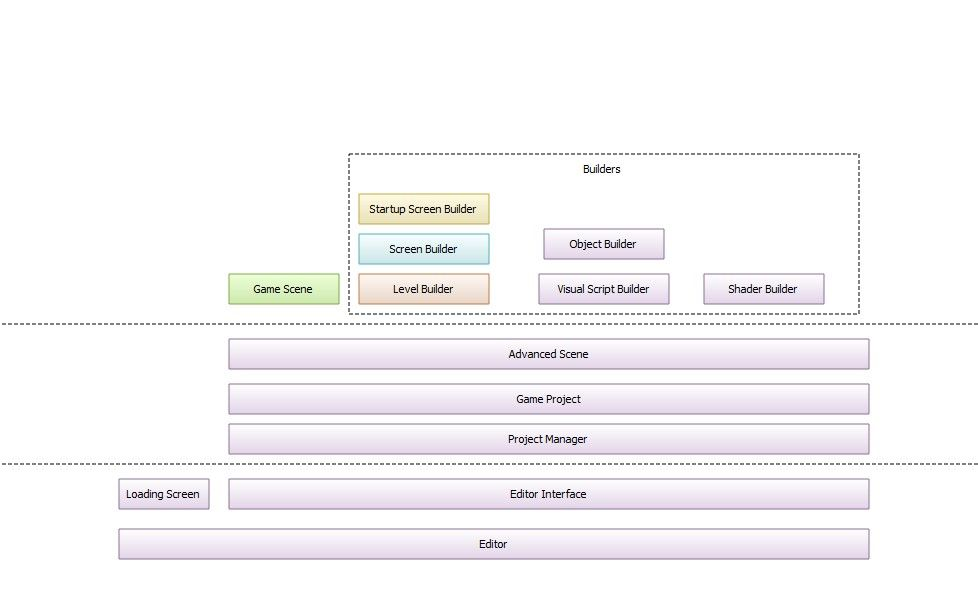

Coding Level
The Engine will offer three (3) levels of coding.
- The first level is your Scene class (like in the Engine first version).
- The second level is your Levels and Screens classes. Each time you create a new level or screen a new class will be created
- The third level is a Game Script. A game script can be created and attached to any object like a component. Several Game scripts can be added to the same Game Object
 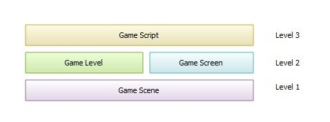
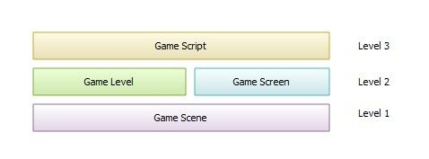 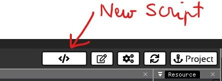
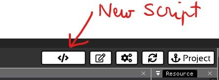What's next
In my next post, I'll present in detail the Engine Game Level and Game Level Builder features. Have a good day.
Nero Game Engine v2 Update : Game Levels (Part 1)
Create Game level
It is now possible to create Game Levels with the Engine. On the top right of the Canvas, there is a button "New Level", when you click on it a popup will open up and let you create a new level. The Level View at the button shows you the list of existing levels.
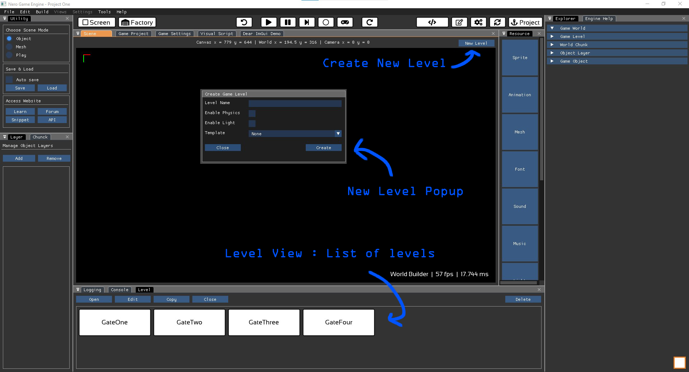
Game Level Directory
When a new level is created, a new directory is also created under "Project Folder/Scene/level/level_name". The directory contains all the data relative to the level : game assets, settings, etc.
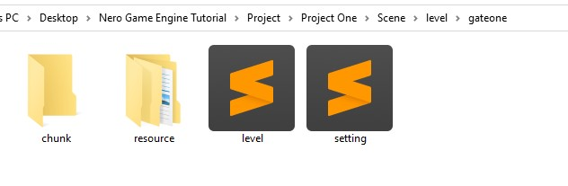
Game Level Class
The Engine generates automatically a new class for each level under "Project Folder/Source/Project Name/cpp/level/".
////////////////////////////////////////////////////////////
// Project One
/////////////////////////////////////////////////////////////
#ifndef GATEONEGAMELEVEL_H
#define GATEONEGAMELEVEL_H
///////////////////////////HEADERS///////////////////////////
//Nero
#include <Nero/core/cpp/scene/GameLevel.h>
//Boost
#include <boost/dll/alias.hpp>
/////////////////////////////////////////////////////////////
namespace ng
{
class GateOneGameLevel : public nero::GameLevel
{
public: //Utility
typedef std::shared_ptr<GateOneGameLevel> Ptr;
public: //Factory
static nero::GameLevel::Ptr createGateOneGameLevel(nero::GameLevel::Context context) noexcept;
public: //Scene core
GateOneGameLevel(nero::GameLevel::Context context);
virtual ~GateOneGameLevel() override;
virtual void init() override;
virtual void handleEvent(const sf::Event& event) override;
virtual void update(const sf::Time& timeStep) override;
virtual void render() override;
};
//Class export
BOOST_DLL_ALIAS(ng::GateOneGameLevel::createGateOneGameLevel, createGateOneGameLevel)
}
#endif // GATEONEGAMELEVEL_H
// Project One
/////////////////////////////////////////////////////////////
#ifndef GATEONEGAMELEVEL_H
#define GATEONEGAMELEVEL_H
///////////////////////////HEADERS///////////////////////////
//Nero
#include <Nero/core/cpp/scene/GameLevel.h>
//Boost
#include <boost/dll/alias.hpp>
/////////////////////////////////////////////////////////////
namespace ng
{
class GateOneGameLevel : public nero::GameLevel
{
public: //Utility
typedef std::shared_ptr<GateOneGameLevel> Ptr;
public: //Factory
static nero::GameLevel::Ptr createGateOneGameLevel(nero::GameLevel::Context context) noexcept;
public: //Scene core
GateOneGameLevel(nero::GameLevel::Context context);
virtual ~GateOneGameLevel() override;
virtual void init() override;
virtual void handleEvent(const sf::Event& event) override;
virtual void update(const sf::Time& timeStep) override;
virtual void render() override;
};
//Class export
BOOST_DLL_ALIAS(ng::GateOneGameLevel::createGateOneGameLevel, createGateOneGameLevel)
}
#endif // GATEONEGAMELEVEL_H
What's next
In my next post we'll talk about managing Game Level assets and World Chunks
Nero Game Engine v2 Update : Game Levels (part 2)
Hi everyone!, how do you do
Managing Game Levels
The Engine Editor loads one Game Level at a time, which means it is possible to "Open" and "Close" a Level.
When a Level is opened, it will appear in full orange background in the Level List view (image below, the second level "Gate of Fate" is the one currently opened). Also, the name of the opened Level appears on the bottom left of the canvas.
You can open and close levels manually with the buttons on top of the Levels list view. First, you have to select the level you want by simply clicking on it. Selected Levels have an Orange border. (image below, the third Level "End Gate" is currently selected).

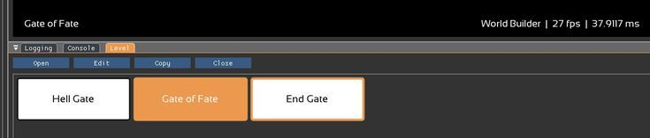
Game Level Resources
Once a Game Level is opened you can access its resources (sprites, fonts, etc). Each Level manages its own resources. The Resource Browser Tab (image below) only show the resources of the currently opened Level
Each time you import resources (sprites, fonts etc.) They get copied in the level resource directory at Project-Name/Scene/level/Level-Name/resource
 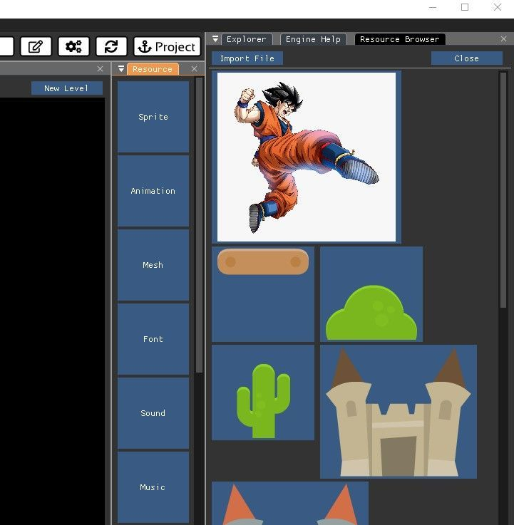
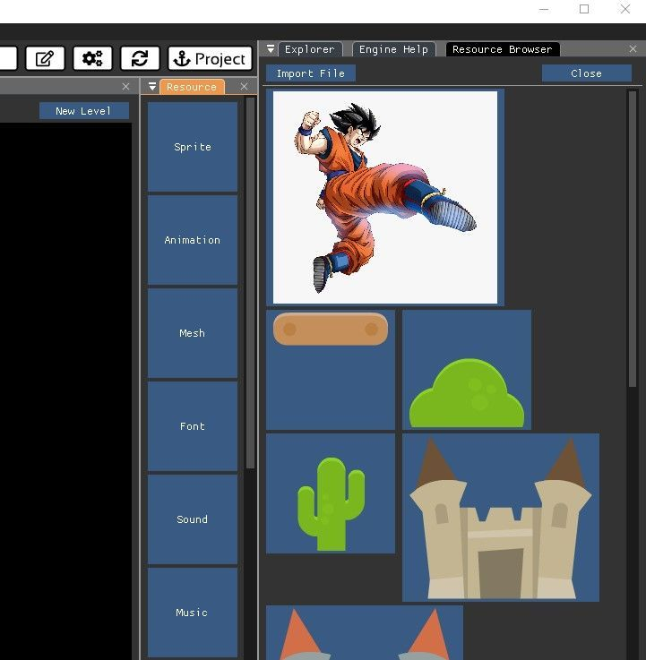What's Next
It is time to start building Game Levels, Next time the Engine will be able to build levels, save them and restore them when the Editor restart.
Nero Game Engine v2 Update : Game Levels (part 3)
Hi everyone! How do you do
Building the Game World
It's now possible to add objects into Game Levels and build your Game World. Saving and Loading Levels work fine The video below shows the full process from creating a new project, adding game levels, and editing the game world
What's next
I'll continue transferring all the features of the First Engine and work on the Editor Interface (Explorer, Edit object properties, etc.)
Current RoadMap
In order to reach the next release, I'll have to complete the following features
- Building the Game World : Implement all the features of the First Engine regarding the creation of Game World (mostly a lot of work on the Editor Interface)
- Playing the Game : Make Game Levels playable inside the Editor in real-time like with the First Engine
- Releasing the Game : Make the Editor generate your final game package with one click
Hi everyone how do you do ?
The development of the Engine is progressing very well, I had to rewrite the Mesh Class, took me more time than expected
Scene Graph
At the top of the Explorer view, you now have the Scenegraph. You can use it to browse through all the objects inside the current level.
 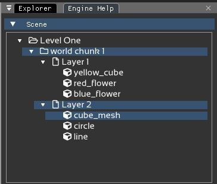
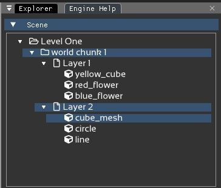Game Object Properties
At the bottom of the Explorer view, you can edit the properties of the selected object. I'm still working on this one
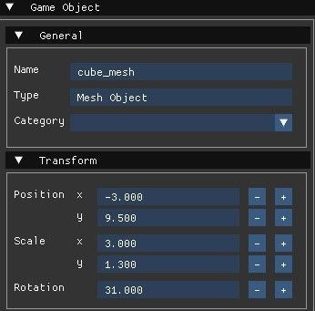

Demo video
What's next
It's time to bring back the Mesh Editor, when that's done I'll bring back all game object types : Sprite, Animation, Mesh, Text, Light etc.